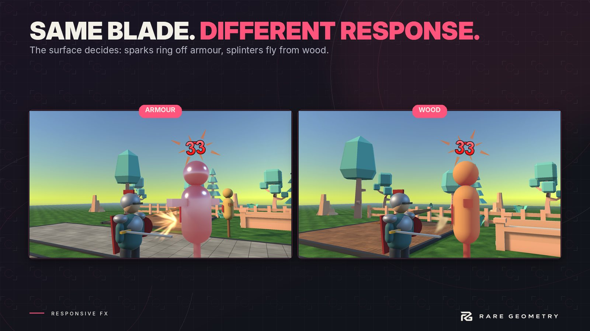

Surfaces and responses
A Surface is an asset: Wood, Stone, Metal. It holds its footstep sounds and, as rows, its answer for every other kind of contact. A Surface Library lists your surfaces and decides which one a thing in the scene is.


How a thing gets its surface #
The library looks, in this order, and the first match wins. The Event Trace shows which rule decided.
- A Surface Tag component on the object or a parent.
- The material, terrain layer or tile at the contact: a rule you set for it in the library, or else a keyword in its name or its texture's name ("oak_planks" matches Wood's keyword "plank").
- A rule for the object's Unity tag.
- A keyword in the object's own name.
- The library's default surface.
A Surface Zone (a trigger volume) overrides the ground inside it: shallow water, a rug on a stone floor.
A response row #
Each row answers one kind of contact: Hit, Projectile (bullets), Collision (bumps), Slide, Roll, Scrape, Interaction, Break, or a Custom kind with your own tag. Steps, jumps and landings use the surface's footstep sounds unless you add a row for them.
| Field | What it does |
|---|---|
| Against | Only answer when the other thing is this surface. Empty answers anything. This is how a blade on wood sounds different from a club on wood. |
| Sounds | One is picked each time, never the same twice in a row. |
| Hard layer, Hard from | A second sound on top for hard contacts (debris, a ring), from the intensity you set. |
| Min intensity | Softer contacts than this are silent, so a resting object never chatters. |
| Soft volume, Pitch drop when hard | Soft contacts are quieter; hard ones are a little deeper. |
| Loop, Loop pitch, Loop fade | For Slide, Roll and Scrape: a loop that plays while the contact lasts and follows its speed. |
| Effect, Effect scale | Spawned at the contact, facing away from the surface, bigger for harder contacts. Pooled. |
| Mark, size, colour, lifetime | A picture left on the surface: a bullet hole, a dent, a crack. |
| Loudness | How loud the contact is to listening AI. 0 is silent to AI. |
| Min interval | The shortest time between two of these from the same object. |
Intensity is how hard the contact was: 1 is ordinary, 2 is heavy, 0.3 is a light touch. Physics Contacts works it out from speed and mass; your own calls pass it in.
Fallback #
A surface can name another as its Fallback: Oak Floor falls back to Wood, a robot's body to Metal. Any kind it has no row for is answered by the fallback. In the matrix those cells are dim.
Weather and conditions #
A Surface Condition is something like Wet or Snowy. While it applies it can add a sound and an effect on top of every step and contact, change volume and pitch, change how far AI hears, tint footprints, and make every surface leave footprints.
A surface can also become another surface under a condition: Dirt answers as Mud when Wet, Grass as Snow when Snowy. Set that in the surface's "When conditions" list.
SurfaceConditions.SetGlobal(wet, 1f); // it rains everywhere
SurfaceConditions.ClearGlobal(); // dry again
A Surface Zone can hold a condition too, for a puddle or a snowed-in corner.
Footwear #
A Footwear asset changes how a character's steps sound: volume, pitch, how far AI hears, and an extra sound per
step (armour clinking). Set it on Surface Footsteps (steps.Footwear = heavyArmour). If it names what the sole is
made of, step rows set Against that surface play on top.
What ships #
The sample library has Wood, Stone, Metal, Glass, Ice, Grass, Leaves, Carpet, Dirt, Gravel, Sand, Snow, Mud, Water and Flesh, each with rows for hits, bullets and bumps, most with slide and roll loops and breaks where they make sense, plus a Blade surface to use as a weapon material. Wet and Snowy conditions and four footwear presets are in the Samples folder. Sounds from Kenney (CC0) and the others listed in Third-Party Notices.